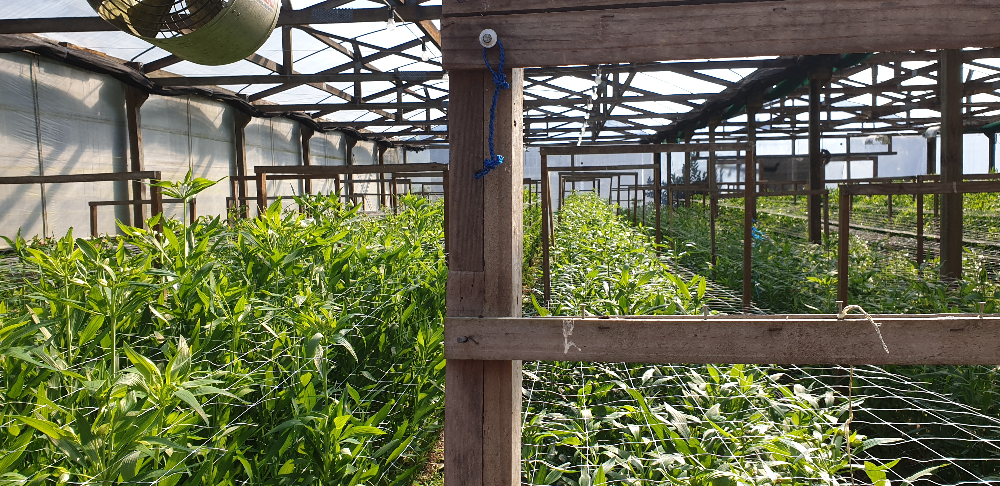

This web page is about Horticulture.
What is horticulture
Horticulture is the science, art or practice of cultivating plants and management of a garden, orchard or a nursey.
the cultivation of fruit and vegetables, flower and ornamental plants.
What is innovation horticulture
Innovation horticulture is testing, adapting and promoting a range of technologies aimed at improving the profitability of fruits and vegetables production all over the world.
What careers could Horticulture lead you
Earning a degree relating to Horticulture science will prepare you for many careers whether you want to work in a field, a lab, a floral shop, at an arboretum, at a
botanical garden or somewhere different.
Horticulture science does challenged the intellectuallys in a work they love
the parts of innovation Horticulture
Plant science is the study of plants
The technology part of it is testing new range of tech that can improve profit
Also there's a business part which is about the business management of horticulture
Some picture
These are some picture involving horticulture.
